01 / ПОСТУПЛЕНИЕ
Учёба в Китае
с понятным планом
Колледжи, бакалавриат, магистратура. Подбор программы, подготовка документов, подача заявки и сопровождение до зачисления.
От первого урока языка до поступления в университет. Помогаем выбрать программу, подготовиться и пройти путь уверенно.
У каждого свой маршрут: попробовать жизнь в Китае, выучить язык, поступить на программу мечты. Мы поможем выбрать следующий шаг и собрать для него сильную заявку.
Колледжи, бакалавриат, магистратура. Подбор программы, подготовка документов, подача заявки и сопровождение до зачисления.
Языковые и подготовительные программы перед поступлением: погружение в академическую среду и время, чтобы усилить профиль.
Китайский и английский с преподавателем, подготовка к языковым экзаменам и CSCA по математике и физике.
Короткие поездки с языковой практикой, кампусной жизнью и знакомством со страной.
Посмотреть зимний лагерьНаша цель — найти для каждого поступающего подходящую программу и максимально доступное грантовое покрытие от университета.
Смотрим на академический профиль, уровень языка, сроки и требования конкретного вуза. Затем формируем стратегию подачи и усиливаем то, что действительно влияет на заявку.
Оценить мои шансыУ поступления много деталей. Мы раскладываем их на понятные решения и идём рядом на каждом этапе.
Разбираем цель, образование, язык, бюджет и сроки.
Подбираем программы, оцениваем требования и грантовые возможности.
Работаем над языком, экзаменами и пакетом документов.
Проверяем заявку и сопровождаем взаимодействие с вузом.
Обычно вуз смотрит на документ об образовании и оценки, уровень языка обучения, мотивацию и профильные достижения. Для некоторых программ нужны вступительные испытания, включая CSCA. Точный список мы проверяем под выбранный вуз и год набора.
Год назад — первая консультация. Сегодня — официальные письма о зачислении и первые занятия в университетах Китая.
За этим результатом — выбор программы, язык, документы, ожидание решения и переезд. China Dreams сопровождал ребят на каждом шаге.
Планируете поступление в 2027 году? Начните с бесплатной консультации: вместе определим направление и план подготовки.
Написать в TelegramChina Dreams работает на пересечении российского и китайского образования. Наш офис находится в Цзинане, а в команде — специалисты с опытом сотрудничества с учебными заведениями обеих стран.
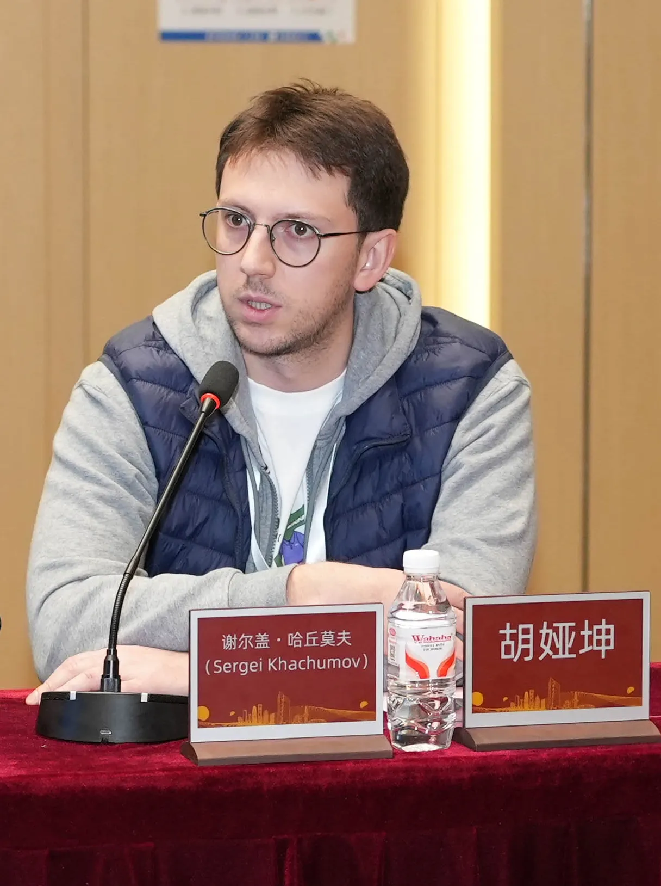
Основатель Российско-Китайского исследовательского центра ТюмГУ и NENU, приглашённый преподаватель Northeast Normal University.

Советник ректора ИРНИТУ по китайскому направлению. Более 15 лет работает в сфере российско-китайского образования.
* Данные об опыте, офисе и команде опубликованы на сайте China Dreams.
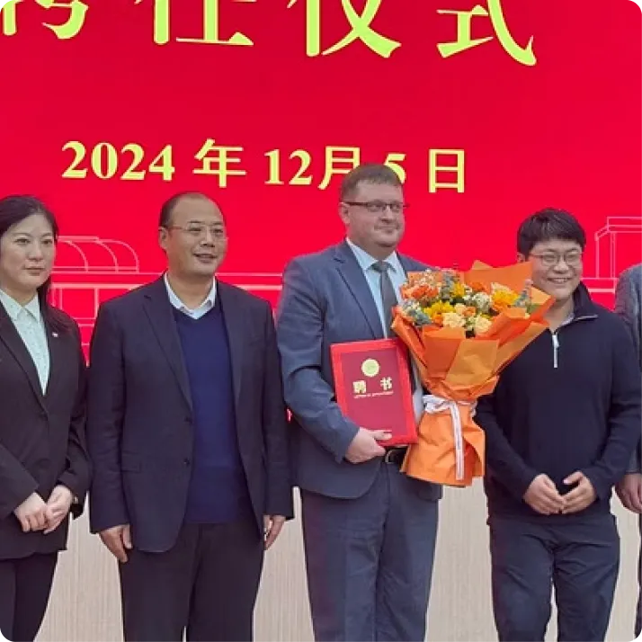
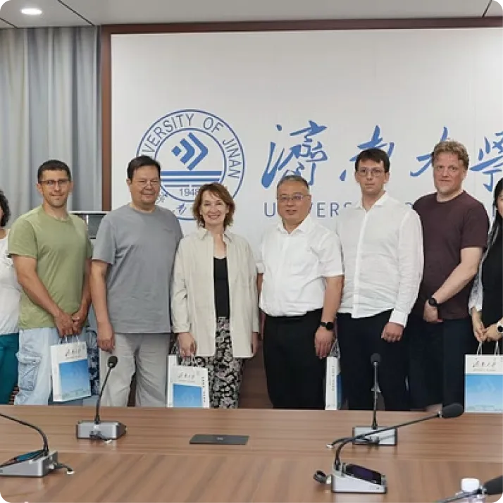
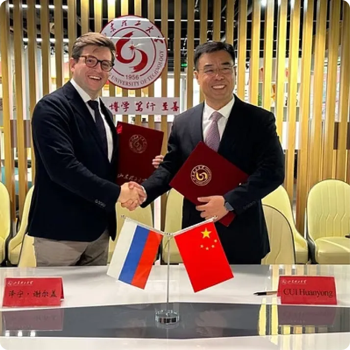
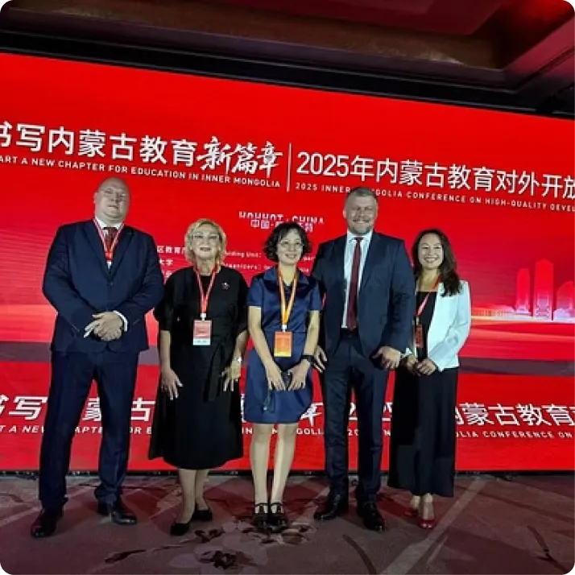
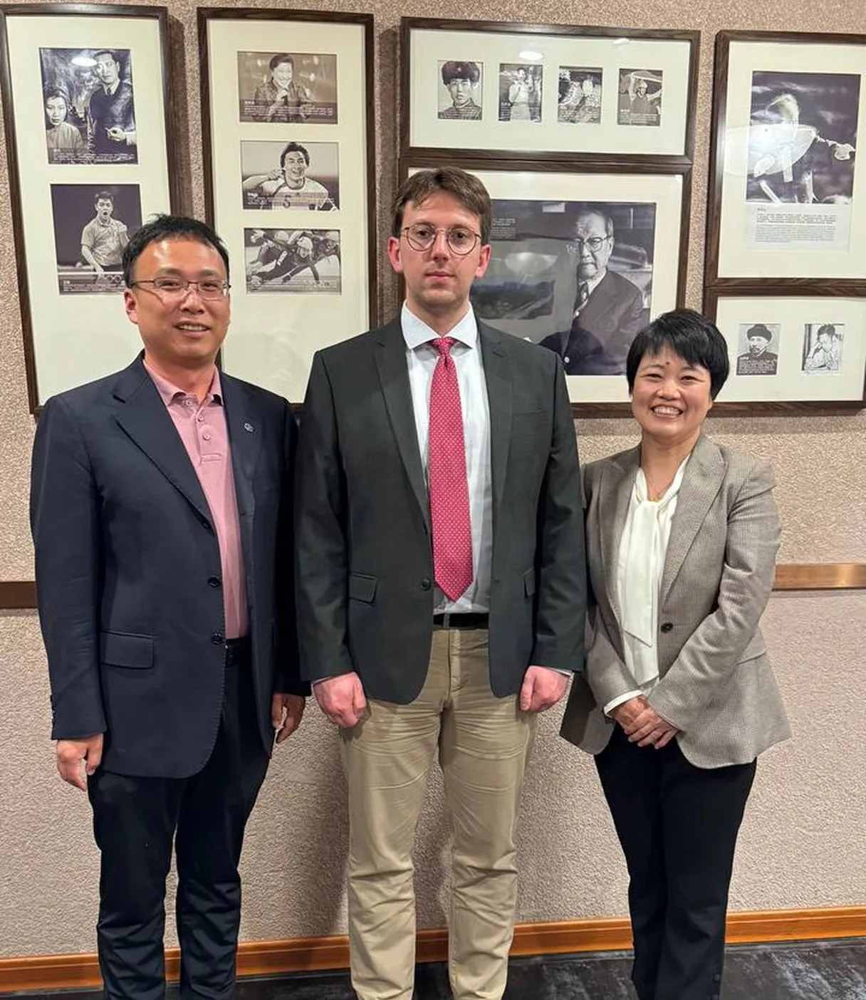
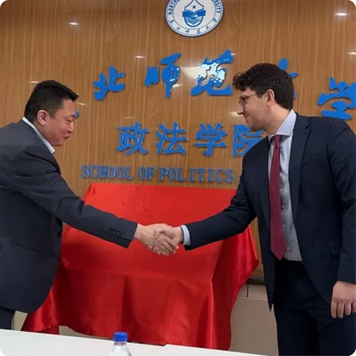
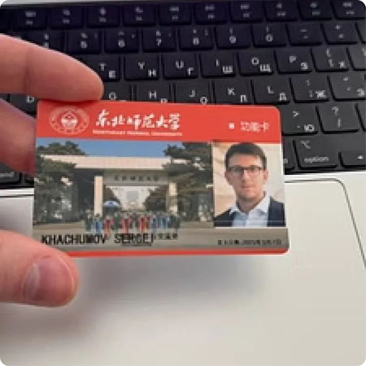
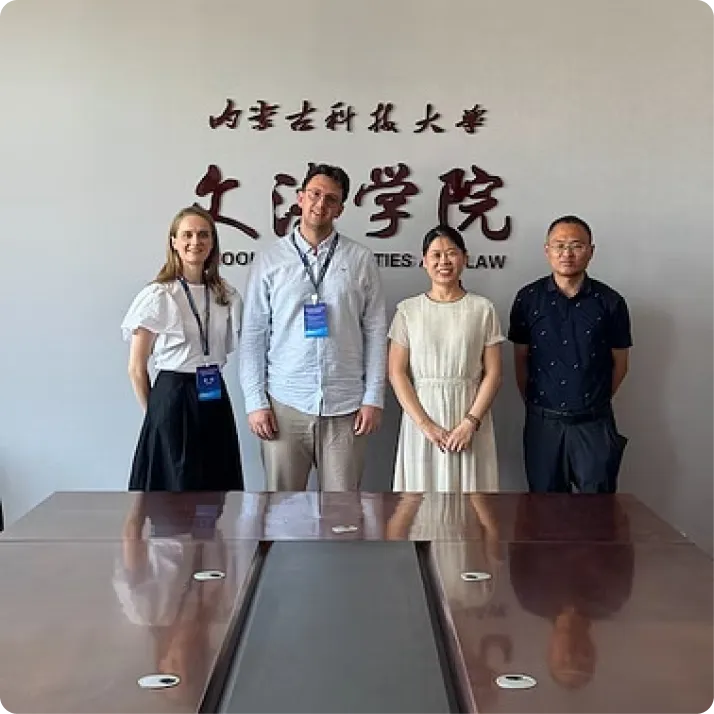
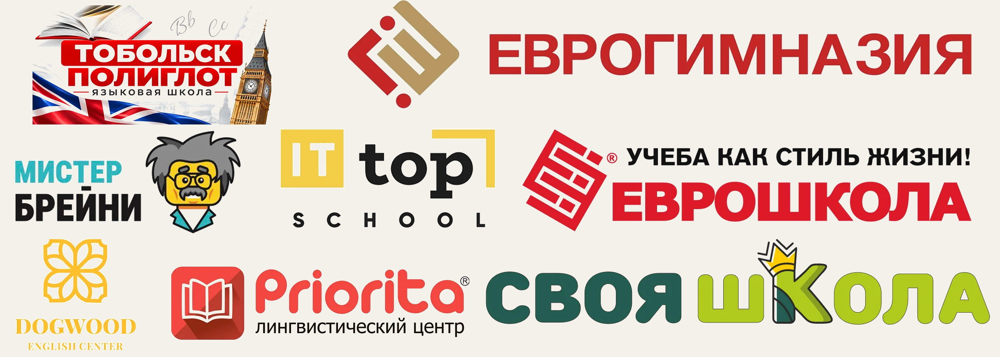
Когда результат нашей работы оценивают партнёры, это особенно ценно.
Еврогимназия поблагодарила China Dreams за сотрудничество. Вместе мы провели зимний и летний культурно-языковые лагеря в Китае, а выпускники школы уже поступают на программы бакалавриата в китайские университеты.
Спасибо команде Еврогимназии за доверие и готовность открывать новые образовательные возможности для детей и подростков.
China Dreams — от первого знакомства с Китаем до поступления в университет.
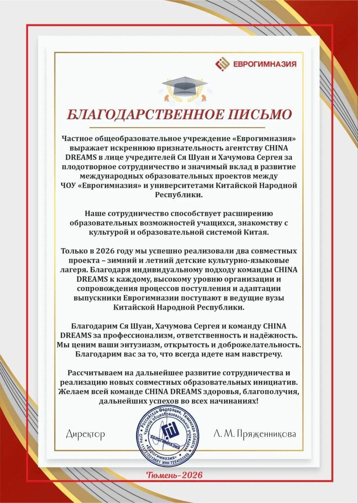
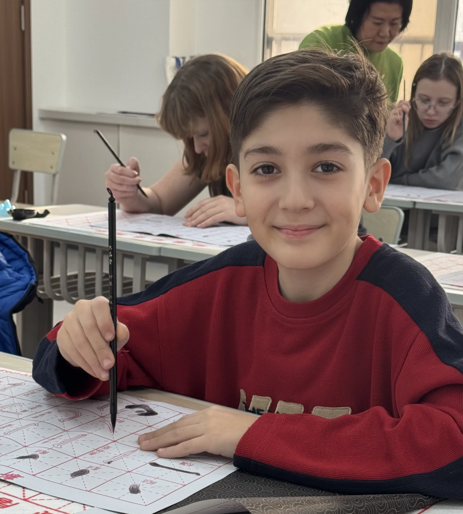
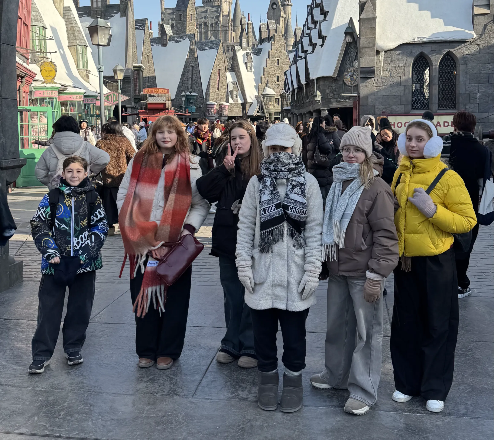
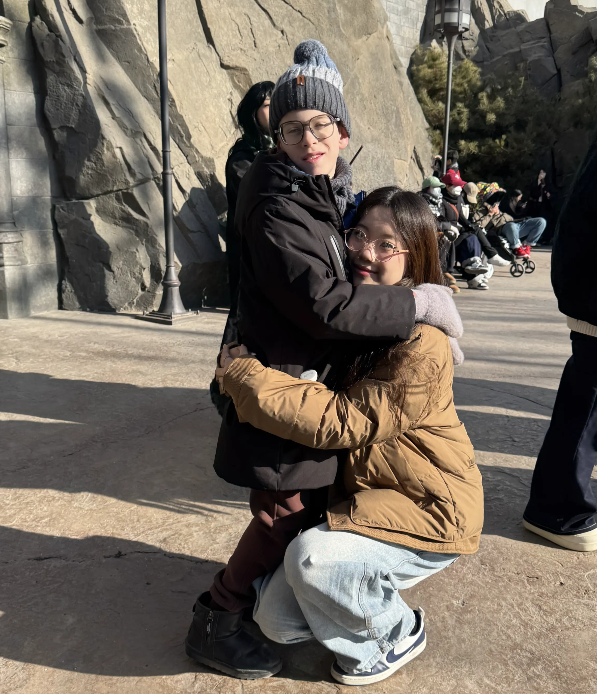
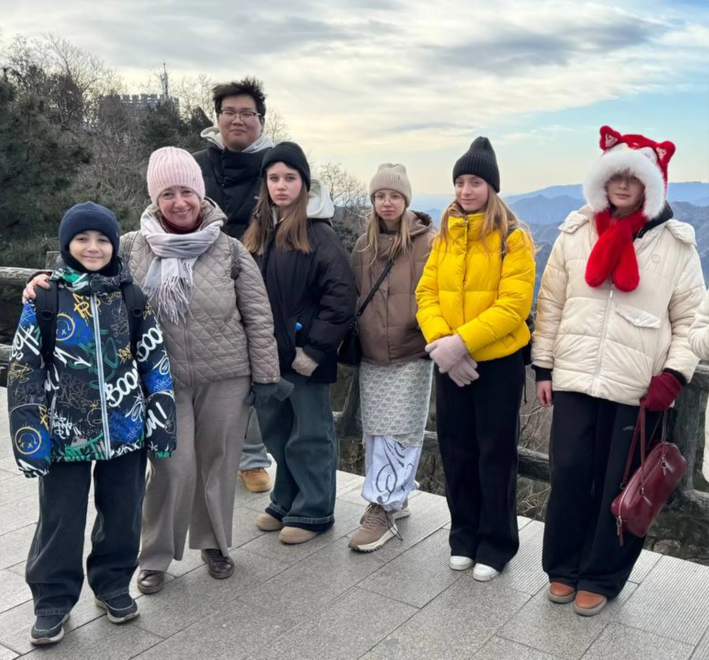
Посмотрите, как проходят наши образовательные поездки. Для каждой программы собраны фотографии, новости и впечатления участников.
Январь 2026 · Telegram ↗Июнь 2026 · Telegram ↗Июнь 2026 · MAX ↗Возможность зависит от программы и языка обучения. Для части направлений сначала подходит языковой год или подготовительная программа. На консультации подберём реалистичный маршрут под ваш уровень.
Вузы предлагают разные варианты покрытия и устанавливают собственные условия. Мы изучаем доступные варианты для выбранной программы и помогаем подготовить заявку. Итоговое решение принимает университет.
Чем раньше определены программа и требования, тем больше времени остаётся на язык, экзамены и документы. Даже если сроки уже близко, можно оценить доступные варианты на текущий набор.
Нет. Мы также сопровождаем поступление в колледжи, языковые программы и организуем краткосрочные культурно-языковые поездки.